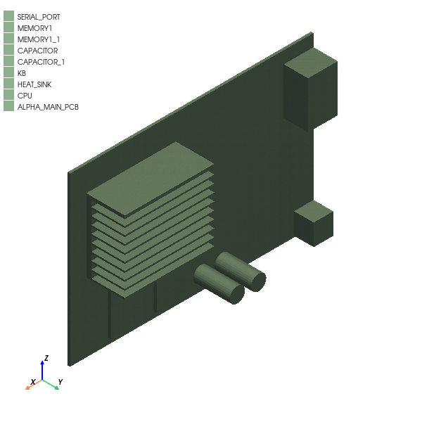
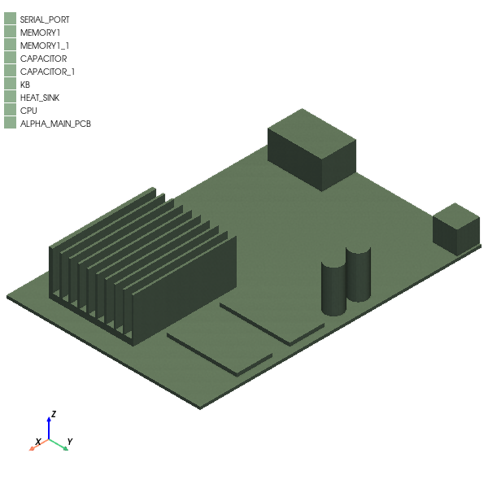
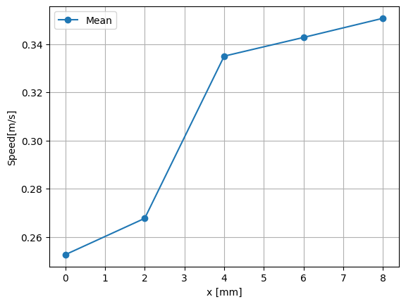
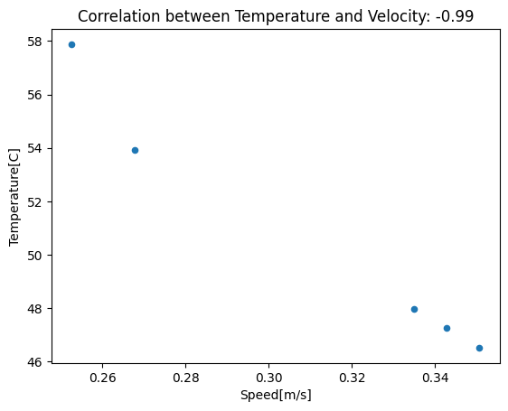
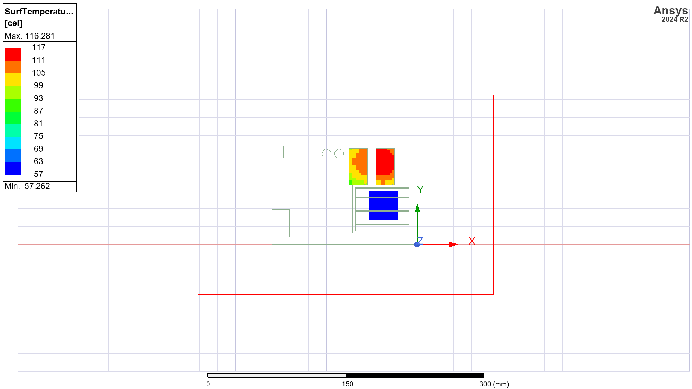
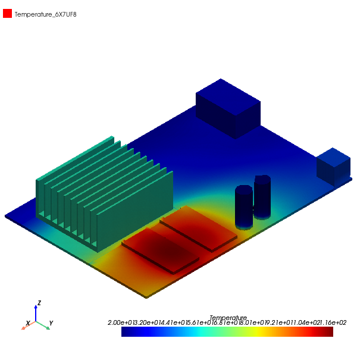

Download this example
Download this example as a Jupyter Notebook or as a Python script.
Graphic card thermal analysis#
This example shows how to use pyAEDT to create a graphic card setup in Icepak and postprocess the results. The example file is an Icepak project with a model that is already created and has materials assigned.
Keywords: Icepak, boundary conditions, postprocessing, monitors.
Perform imports and define constants#
Perform required imports.
[1]:
import os
import tempfile
import time
[2]:
import ansys.aedt.core
import pandas as pd
from IPython.display import Image
C:\Users\ansys\AppData\Local\Temp\ipykernel_1932\693189822.py:2: DeprecationWarning:
Pyarrow will become a required dependency of pandas in the next major release of pandas (pandas 3.0),
(to allow more performant data types, such as the Arrow string type, and better interoperability with other libraries)
but was not found to be installed on your system.
If this would cause problems for you,
please provide us feedback at https://github.com/pandas-dev/pandas/issues/54466
import pandas as pd
Define constants.
[3]:
AEDT_VERSION = "2024.2"
NUM_CORES = 4
NG_MODE = False # Do not show the graphical user interface.
Create temporary directory and download project#
Create a temporary directory where downloaded data or dumped data can be stored. If you’d like to retrieve the project data for subsequent use, the temporary folder name is given by temp_folder.name.
[4]:
temp_folder = tempfile.TemporaryDirectory(suffix=".ansys")
project_temp_name = ansys.aedt.core.downloads.download_icepak(
destination=temp_folder.name
)
# ## Open project
#
# Open the project without the GUI.
[5]:
ipk = ansys.aedt.core.Icepak(
project=project_temp_name,
version=AEDT_VERSION,
new_desktop=True,
non_graphical=NG_MODE,
)
PyAEDT INFO: Parsing C:\Users\ansys\AppData\Local\Temp\tmpdrh3wdx1.ansys\icepak\Graphics_card.aedt.
PyAEDT INFO: Python version 3.10.11 (tags/v3.10.11:7d4cc5a, Apr 5 2023, 00:38:17) [MSC v.1929 64 bit (AMD64)]
PyAEDT INFO: PyAEDT version 0.12.dev0.
PyAEDT INFO: Initializing new Desktop session.
PyAEDT INFO: Log on console is enabled.
PyAEDT INFO: Log on file C:\Users\ansys\AppData\Local\Temp\pyaedt_ansys_6bd72234-3ebb-4bae-8c0d-8f3035b8f733.log is enabled.
PyAEDT INFO: Log on AEDT is enabled.
PyAEDT INFO: Debug logger is disabled. PyAEDT methods will not be logged.
PyAEDT INFO: Launching PyAEDT with gRPC plugin.
PyAEDT INFO: New AEDT session is starting on gRPC port 62144
PyAEDT INFO: File C:\Users\ansys\AppData\Local\Temp\tmpdrh3wdx1.ansys\icepak\Graphics_card.aedt correctly loaded. Elapsed time: 0m 0sec
PyAEDT INFO: AEDT installation Path C:\Program Files\AnsysEM\v242\Win64
PyAEDT INFO: Ansoft.ElectronicsDesktop.2024.2 version started with process ID 8272.
PyAEDT INFO: Project Graphics_card has been opened.
PyAEDT INFO: Active Design set to IcepakDesign1
PyAEDT INFO: Aedt Objects correctly read
Plot model and rotate#
Plot the model using the pyAEDT-PyVista integration and save the result to a file. Rotate the model and plot the rotated model again.
[6]:
plot1 = ipk.plot(
show=False,
output_file=os.path.join(temp_folder.name, "Graphics_card_1.jpg"),
plot_air_objects=False,
)
ipk.modeler.rotate(ipk.modeler.object_names, "X")
plot2 = ipk.plot(
show=False,
output_file=os.path.join(temp_folder.name, "Graphics_card_2.jpg"),
plot_air_objects=False,
)
PyAEDT INFO: Modeler class has been initialized! Elapsed time: 0m 0sec
PyAEDT INFO: PostProcessor class has been initialized! Elapsed time: 0m 0sec
PyAEDT INFO: Post class has been initialized! Elapsed time: 0m 0sec
C:\actions-runner\_work\pyaedt-examples\pyaedt-examples\.venv\lib\site-packages\pyvista\jupyter\notebook.py:37: UserWarning: Failed to use notebook backend:
No module named 'trame'
Falling back to a static output.
warnings.warn(

C:\actions-runner\_work\pyaedt-examples\pyaedt-examples\.venv\lib\site-packages\pyvista\jupyter\notebook.py:37: UserWarning: Failed to use notebook backend:
No module named 'trame'
Falling back to a static output.
warnings.warn(

Define boundary conditions#
Create source blocks on the CPU and memories.
[7]:
ipk.create_source_block(object_name="CPU", input_power="25W")
ipk.create_source_block(object_name=["MEMORY1", "MEMORY1_1"], input_power="5W")
PyAEDT INFO: Materials class has been initialized! Elapsed time: 0m 0sec
PyAEDT INFO: Block on ['CPU'] with 25W power created correctly.
PyAEDT INFO: Block on ['MEMORY1', 'MEMORY1_1'] with 5W power created correctly.
[7]:
<ansys.aedt.core.modules.boundary.BoundaryObject at 0x2462a06bd30>
The air region object handler is used to specify the inlet (fixed velocity condition) and outlet (fixed pressure condition) at x_max and x_min.
[8]:
region = ipk.modeler["Region"]
ipk.assign_pressure_free_opening(
assignment=region.top_face_x.id, boundary_name="Outlet"
)
ipk.assign_velocity_free_opening(
assignment=region.bottom_face_x.id,
boundary_name="Inlet",
velocity=["1m_per_sec", "0m_per_sec", "0m_per_sec"],
)
[8]:
<ansys.aedt.core.modules.boundary.BoundaryObject at 0x2462a069360>
Assign mesh settings#
Assign mesh region#
Assign a mesh region around the heat sink and CPU.
[9]:
mesh_region = ipk.mesh.assign_mesh_region(assignment=["HEAT_SINK", "CPU"])
PyAEDT INFO: Mesh class has been initialized! Elapsed time: 0m 0sec
Print the available settings for the mesh region
[10]:
mesh_region.settings
[10]:
{'ProximitySizeFunction': True, 'Enable2DCutCell': False, 'CurvatureSizeFunction': True, 'MeshRegionResolution': 5, 'Enforce2dot5DCutCell': False, 'EnableTransition': False, 'OptimizePCBMesh': True, 'StairStepMeshing': False, 'EnforceCutCellMeshing': False}
Set the mesh region settings to manual and see newly available settings.
[11]:
mesh_region.manual_settings = True
mesh_region.settings
[11]:
{'Enable2DCutCell': False, 'CurvatureSizeFunction': True, 'MinGapY': '1mm', 'MaxElementSizeZ': '0.03mm', 'BufferLayers': '0', 'EnableMLM': True, 'MaxElementSizeY': '0.02mm', 'MinElementsOnEdge': '2', 'MaxSizeRatio': '2', 'EnableTransition': False, 'UniformMeshParametersType': 'Average', 'MaxLevels': '0', 'OptimizePCBMesh': True, 'NoOGrids': False, 'StairStepMeshing': False, 'ProximitySizeFunction': True, '2DMLMType': '2DMLM_None', 'Enforce2dot5DCutCell': False, 'MaxElementSizeX': '0.02mm', 'MinGapX': '1mm', 'MinGapZ': '1mm', 'EnforceCutCellMeshing': False, 'EnforeMLMType': '3D', 'MinElementsInGap': '3'}
Modify settings and update.
[12]:
mesh_region.settings["MaxElementSizeX"] = "2mm"
mesh_region.settings["MaxElementSizeY"] = "2mm"
mesh_region.settings["MaxElementSizeZ"] = "2mm"
mesh_region.settings["EnableMLM"] = True
mesh_region.settings["MaxLevels"] = "2"
mesh_region.settings["MinElementsInGap"] = 4
mesh_region.update()
[12]:
True
Modify the slack of the subregion around the objects.
[13]:
subregion = mesh_region.assignment
subregion.positive_x_padding = "20mm"
subregion.positive_y_padding = "5mm"
subregion.positive_z_padding = "5mm"
subregion.negative_x_padding = "5mm"
subregion.negative_y_padding = "5mm"
subregion.negative_z_padding = "10mm"
Assign monitors#
Assign a temperature face monitor to the CPU face in contact with the heatsink.
[14]:
cpu = ipk.modeler["CPU"]
m1 = ipk.monitor.assign_face_monitor(
face_id=cpu.top_face_z.id,
monitor_quantity="Temperature",
monitor_name="TemperatureMonitor1",
)
Assign multiple speed point monitors downstream of the assembly.
[15]:
speed_monitors = []
for x_pos in range(0, 10, 2):
m = ipk.monitor.assign_point_monitor(
point_position=[f"{x_pos}mm", "40mm", "15mm"], monitor_quantity="Speed"
)
speed_monitors.append(m)
Solve project#
Create a setup, modify solver settings, and run the simulation.
[16]:
setup1 = ipk.create_setup()
setup1.props["Flow Regime"] = "Turbulent"
setup1.props["Convergence Criteria - Max Iterations"] = 5
setup1.props["Linear Solver Type - Pressure"] = "flex"
setup1.props["Linear Solver Type - Temperature"] = "flex"
ipk.save_project()
ipk.analyze(setup=setup1.name, cores=NUM_CORES, tasks=NUM_CORES)
PyAEDT INFO: Project Graphics_card Saved correctly
PyAEDT INFO: Key Desktop/ActiveDSOConfigurations/Icepak correctly changed.
PyAEDT INFO: Solving design setup Setup
PyAEDT INFO: Key Desktop/ActiveDSOConfigurations/Icepak correctly changed.
PyAEDT INFO: Design setup Setup solved correctly in 0.0h 3.0m 3.0s
[16]:
True
Postprocess#
Perform quantitative postprocessing#
Get the point monitor data. A dictionary is returned with 'Min', 'Max', and 'Mean' keys.
[17]:
temperature_data = ipk.post.evaluate_monitor_quantity(
monitor=m1, quantity="Temperature"
)
temperature_data
[17]:
{'Min': '61.0866',
'Max': '61.0866',
'Mean': '61.0866',
'Stdev': '0',
'Unit': 'C'}
It is also possible to get the data as a Pandas dataframe for advanced postprocessing.
[18]:
speed_fs = ipk.post.create_field_summary()
for m_name in speed_monitors:
speed_fs.add_calculation(
entity="Monitor", geometry="Volume", geometry_name=m_name, quantity="Speed"
)
speed_data = speed_fs.get_field_summary_data(pandas_output=True)
All the data is now in a dataframe, making it easy to visualize and manipulate.
[19]:
speed_data.head()
[19]:
| Entity Type | Geometry Type | Entity | Quantity | Side | Normal | Mesh | Min | Max | Mean | Stdev | Area/Volume | Variation | |
|---|---|---|---|---|---|---|---|---|---|---|---|---|---|
| 0 | Monitor | Volume | Monitor_R7L0IV | Speed[m/s] | Default | All | 0.252590 | 0.252590 | 0.252590 | 0.0 | 0 m^3 | ||
| 1 | Monitor | Volume | Monitor_6JMSCW | Speed[m/s] | Default | All | 0.267673 | 0.267673 | 0.267673 | 0.0 | 0 m^3 | ||
| 2 | Monitor | Volume | Monitor_AVA4TQ | Speed[m/s] | Default | All | 0.334992 | 0.334992 | 0.334992 | 0.0 | 0 m^3 | ||
| 3 | Monitor | Volume | Monitor_FY2UXN | Speed[m/s] | Default | All | 0.342764 | 0.342764 | 0.342764 | 0.0 | 0 m^3 | ||
| 4 | Monitor | Volume | Monitor_DEYKP4 | Speed[m/s] | Default | All | 0.350722 | 0.350722 | 0.350722 | 0.0 | 0 m^3 |
The speed_data dataframe contains data from monitors, so it can be expanded with information of their position.
[20]:
for i in range(3):
direction = ["X", "Y", "Z"][i]
speed_data["Position" + direction] = [
ipk.monitor.all_monitors[entity].location[i] for entity in speed_data["Entity"]
]
Plot the velocity profile at different X positions
[21]:
speed_data.plot(
x="PositionX",
y="Mean",
kind="line",
marker="o",
ylabel=speed_data.at[0, "Quantity"],
xlabel=f"x [{ipk.modeler.model_units}]",
grid=True,
)
[21]:
<Axes: xlabel='x [mm]', ylabel='Speed[m/s]'>

Extract temperature data at those same locations (so the speed_monitors list is used).
[22]:
temperature_fs = ipk.post.create_field_summary()
for m_name in speed_monitors:
temperature_fs.add_calculation(
entity="Monitor",
geometry="Volume",
geometry_name=m_name,
quantity="Temperature",
)
temperature_fs = temperature_fs.get_field_summary_data(pandas_output=True)
temperature_fs.head()
[22]:
| Entity Type | Geometry Type | Entity | Quantity | Side | Normal | Mesh | Min | Max | Mean | Stdev | Area/Volume | Variation | |
|---|---|---|---|---|---|---|---|---|---|---|---|---|---|
| 0 | Monitor | Volume | Monitor_R7L0IV | Temperature[C] | Default | All | 57.8798 | 57.8798 | 57.8798 | 0.0 | 0 m^3 | ||
| 1 | Monitor | Volume | Monitor_6JMSCW | Temperature[C] | Default | All | 53.9152 | 53.9152 | 53.9152 | 0.0 | 0 m^3 | ||
| 2 | Monitor | Volume | Monitor_AVA4TQ | Temperature[C] | Default | All | 47.9797 | 47.9797 | 47.9797 | 0.0 | 0 m^3 | ||
| 3 | Monitor | Volume | Monitor_FY2UXN | Temperature[C] | Default | All | 47.2522 | 47.2522 | 47.2522 | 0.0 | 0 m^3 | ||
| 4 | Monitor | Volume | Monitor_DEYKP4 | Temperature[C] | Default | All | 46.5247 | 46.5247 | 46.5247 | 0.0 | 0 m^3 |
The two dataframes can be merged using the pd.merge() function. With the merge, suffixes are added to the column names to differentiate between the columns from each original dataframe.
[23]:
merged_df = pd.merge(
temperature_fs, speed_data, on="Entity", suffixes=("_temperature", "_speed")
)
merged_df.head()
[23]:
| Entity Type_temperature | Geometry Type_temperature | Entity | Quantity_temperature | Side_temperature | Normal_temperature | Mesh_temperature | Min_temperature | Max_temperature | Mean_temperature | ... | Mesh_speed | Min_speed | Max_speed | Mean_speed | Stdev_speed | Area/Volume_speed | Variation_speed | PositionX | PositionY | PositionZ | |
|---|---|---|---|---|---|---|---|---|---|---|---|---|---|---|---|---|---|---|---|---|---|
| 0 | Monitor | Volume | Monitor_R7L0IV | Temperature[C] | Default | All | 57.8798 | 57.8798 | 57.8798 | ... | All | 0.252590 | 0.252590 | 0.252590 | 0.0 | 0 m^3 | 0.0 | 40.0 | 15.0 | ||
| 1 | Monitor | Volume | Monitor_6JMSCW | Temperature[C] | Default | All | 53.9152 | 53.9152 | 53.9152 | ... | All | 0.267673 | 0.267673 | 0.267673 | 0.0 | 0 m^3 | 2.0 | 40.0 | 15.0 | ||
| 2 | Monitor | Volume | Monitor_AVA4TQ | Temperature[C] | Default | All | 47.9797 | 47.9797 | 47.9797 | ... | All | 0.334992 | 0.334992 | 0.334992 | 0.0 | 0 m^3 | 4.0 | 40.0 | 15.0 | ||
| 3 | Monitor | Volume | Monitor_FY2UXN | Temperature[C] | Default | All | 47.2522 | 47.2522 | 47.2522 | ... | All | 0.342764 | 0.342764 | 0.342764 | 0.0 | 0 m^3 | 6.0 | 40.0 | 15.0 | ||
| 4 | Monitor | Volume | Monitor_DEYKP4 | Temperature[C] | Default | All | 46.5247 | 46.5247 | 46.5247 | ... | All | 0.350722 | 0.350722 | 0.350722 | 0.0 | 0 m^3 | 8.0 | 40.0 | 15.0 |
5 rows × 28 columns
The column names are renamed based on the Quantity column of the original dataframes. Finally, only the 'Entity', 'Mean_temperature', and 'Mean_speed' columns are selected and assigned to the merged dataframe.
[24]:
temperature_quantity = temperature_fs["Quantity"].iloc[0]
velocity_quantity = speed_data["Quantity"].iloc[0]
merged_df.rename(
columns={"Mean_temperature": temperature_quantity, "Mean_speed": velocity_quantity},
inplace=True,
)
merged_df = merged_df[
[
"Entity",
temperature_quantity,
velocity_quantity,
"PositionX",
"PositionY",
"PositionZ",
]
]
merged_df.head()
[24]:
| Entity | Temperature[C] | Speed[m/s] | PositionX | PositionY | PositionZ | |
|---|---|---|---|---|---|---|
| 0 | Monitor_R7L0IV | 57.8798 | 0.252590 | 0.0 | 40.0 | 15.0 |
| 1 | Monitor_6JMSCW | 53.9152 | 0.267673 | 2.0 | 40.0 | 15.0 |
| 2 | Monitor_AVA4TQ | 47.9797 | 0.334992 | 4.0 | 40.0 | 15.0 |
| 3 | Monitor_FY2UXN | 47.2522 | 0.342764 | 6.0 | 40.0 | 15.0 |
| 4 | Monitor_DEYKP4 | 46.5247 | 0.350722 | 8.0 | 40.0 | 15.0 |
Compute the correlation coefficient between velocity and temperature from the merged dataframe and plot a scatter plot to visualize their relationship.
[25]:
correlation = merged_df[velocity_quantity].corr(merged_df[temperature_quantity])
ax = merged_df.plot.scatter(x=velocity_quantity, y=temperature_quantity)
ax.set_xlabel(velocity_quantity)
ax.set_ylabel(temperature_quantity)
ax.set_title(f"Correlation between Temperature and Velocity: {correlation:.2f}")
[25]:
Text(0.5, 1.0, 'Correlation between Temperature and Velocity: -0.99')

The further away from the assembly, the faster and colder the air due to mixing. Despite being extremely simple, this example demonstrates the potential of importing field summary data into Pandas.
Perform qualitative Postprocessing#
Create a temperature plot on main components and export it to a PNG file.
[26]:
surflist = [i.id for i in ipk.modeler["CPU"].faces]
surflist += [i.id for i in ipk.modeler["MEMORY1"].faces]
surflist += [i.id for i in ipk.modeler["MEMORY1_1"].faces]
plot3 = ipk.post.create_fieldplot_surface(
assignment=surflist, quantity="SurfTemperature"
)
path = plot3.export_image(
full_path=os.path.join(temp_folder.name, "temperature.png"),
orientation="top",
show_region=False,
)
Image(filename=path) # Display the image
[26]:

Use PyVista to display the temperature map.
[27]:
plot4 = ipk.post.plot_field(
quantity="Temperature",
assignment=[
"SERIAL_PORT",
"MEMORY1",
"MEMORY1_1",
"CAPACITOR",
"CAPACITOR_1",
"KB",
"HEAT_SINK",
"CPU",
"ALPHA_MAIN_PCB",
],
plot_cad_objs=False,
show=False,
export_path=temp_folder.name,
)
C:\actions-runner\_work\pyaedt-examples\pyaedt-examples\.venv\lib\site-packages\pyvista\jupyter\notebook.py:37: UserWarning: Failed to use notebook backend:
No module named 'trame'
Falling back to a static output.
warnings.warn(

Release AEDT#
[28]:
ipk.save_project()
ipk.release_desktop()
# Wait 3 seconds to allow AEDT to shut down before cleaning the temporary directory.
time.sleep(3)
PyAEDT INFO: Project Graphics_card Saved correctly
PyAEDT INFO: Desktop has been released and closed.
Clean up#
All project files are saved in the folder temp_folder.name. If you’ve run this example as a Jupyter notebook, you can retrieve those project files. The following cell removes all temporary files, including the project folder.
[29]:
temp_folder.cleanup()
Download this example
Download this example as a Jupyter Notebook or as a Python script.